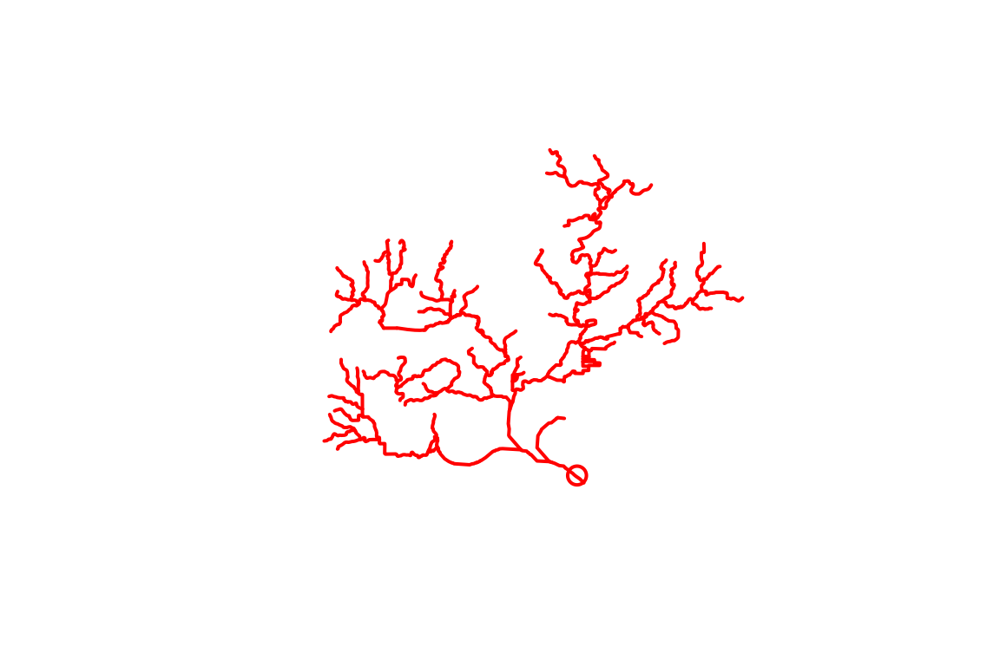

The nhdplusTools package is intended to provide a reusable set of tools to subset, relate data to, and refactor NHDPlus data. It implements a data model consistent with both the NHDPlus and HY_Features. The package aims to provide a simple set of tools with minimal dependencies that can be used to build workflows using NHDPlus data.
The package has three types of functionality:
This introduction gives an overview of the basic package setup and an brief demonstration of the three types of functionality. Detailed documentation of all the package functions can be found at the Referece page
Installation
The easiest way to install nhdplusTools is with the devtools packagelike this:
install.packages("devtools")
devtools::install_github(dblodgett-usgs/nhdplusTools)Then you can load up nhdplusTools:
library(nhdplusTools)
#> USGS Support Package: https://owi.usgs.gov/R/packages.html#supportData and Package Basics
The first thing you are going to need to do is go get some data to work with. You can download the National Seamless database at this web page. You will need 7z or the archive package to extract it.
Once you have it downloaded and extracted, you can tell the nhdplusTools package where it is with the nhdplus_path() function.
nhdplus_path("data_dir/natseamless.gpkg")
nhdplus_path()
#> [1] "data_dir/natseamless.gpkg"If you are going to be loading and reloading the flowlines, flowline attributes, or catchments, repeatadly, the stage_national_data() function will speed things up a bit. It creates three staged files that are quicker for R to read at the path you tell it. If you call it and its output files exist, it won’t overwrite and just return the paths to your staged files.
staged_data <- stage_national_data()
#> Warning in stage_national_data(): No output path provided, using: data_dir
str(staged_data)
#> List of 3
#> $ attributes: chr "data_dir/nhdplus_flowline_attributes.rds"
#> $ flowline : chr "data_dir/nhdplus_flowline.rds"
#> $ catchment : chr "data_dir/nhdplus_catchment.rds"As you can see, stage_national_data() assumes you want to stage data in the same folder as the nhdplus_path database and returns a list of .rds files that can be read with readRDS. The flowlines and catchments are sf data.frames and attributes is a plain data.frame with the attributes from flowline. Note that this introduction uses a small subset of the national seamless database as shown in the plot.
flowline <- readRDS(staged_data$flowline)
names(flowline)[1:10]
#> [1] "COMID" "FDATE" "RESOLUTION" "GNIS_ID" "GNIS_NAME"
#> [6] "LENGTHKM" "REACHCODE" "FLOWDIR" "WBAREACOMI" "FTYPE"
library(sf)
#> Linking to GEOS 3.6.1, GDAL 2.1.3, proj.4 4.9.3
plot(flowline[[attr(flowline, "sf_column")]])
Discovery and Subsetting
One of the primary workflows nhdplusTools is designed to accomplish can be described in three steps:
- what NHDPlus catchment is at the outlet of a watershed,
- figure out what catchments are up or downstream of that catchment, and
- create a stand alone subset for that collection of catchments.
Say we want to get a subset of the NHDPlus upstream of a given location. We can start with discover_nhdplus_id() First, let’s look at a given point location. Then see where it is relative to our flowlines.
lon <- -89.362239
lat <- 43.090266
start_point <- sf::st_sfc(sf::st_point(c(lon, lat)),
crs = 4269)
geom_col <- attr(flowline, "sf_column")
plot(flowline[[geom_col]])
plot(start_point, cex = 1.5, lwd = 2, col = "red", add = TRUE)
OK, so we have a point location near a river and we want to figure out what catchment is out outlet. We can use the discover_nhdplus_id() function which calls out to a web service and returns an NHDPlus catchment identifier, commonly called a COMID.
start_comid <- discover_nhdplus_id(start_point)
start_comid
#> [1] 13293750With that starting COMID, we can use one of the network navigation functions, get_UM, get_UT, get_DM, or get_DD to retrieve a collection of comids along the upstream mainstaem, upstream with tributaries, downstream mainstem, or downstream with diversions network paths. Here we’ll use upstream with tributaries.
UT_comids <- get_UT(flowline, start_comid)
UT_comids
#> [1] 13293750 13294312 13294308 13294310 13293634 13294304 13294314
#> [8] 13293696 13294368 13294298 13294300 13293690 13293694 13294290
#> [15] 13294292 13294294 13294296 13294306 13294264 13293692 13294176
#> [22] 13294166 13293588 13293576 13294184 13293676 13293678 13294174
#> [29] 13294168 13293548 13293554 13293572 13293574 13294288 13293620
#> [36] 13293624 13293688 13293672 13294178 13293578 13293600 13293590
#> [43] 13294282 13293568 13293552 13293550 13293570 13294286 13294284
#> [50] 13293612 13293614 13293674 13293646 13293562 13293564 13293540
#> [57] 13293556 13293558 13294158 13294280 13293584 13293586 13293520
#> [64] 13293518 13293556 13294154 13293506 13294152 13293504 13293480
#> [71] 13293472 13293508 13294150 13293542 13294134 13293478 13294132
#> [78] 13293514 13293532 13294148 13294138 13293536 13293494 13294130
#> [85] 13294128 13293476 13294120 13293530 13294144 13294150 13293524
#> [92] 13293516 13293496 13293502 13293492 937090091 13294394 13293450
#> [99] 13293448 13293522 13293526 13293532 13294140 13293488 13293486
#> [106] 13294382 937090090 13293454 13293442 13294116 13293524 13293516
#> [113] 13293484 13293498 13294274 13293456 13294124 13293430 13294140
#> [120] 13293458 13293432 13293452 13293462 13293464 13294384 13293424
#> [127] 13293422 13293452 13294114 13293428 13293438 13293444 13294276
#> [134] 13302588 13294110 13293512 13293416 13293418 13293420 13294270
#> [141] 13294272 13294386 13293398 13293474 13293460 13293400 13293410
#> [148] 13293412 13294278 13302590 13293392 13294118 13294122 13293394
#> [155] 13293404 13293490 13293446 13293388 13293440 13293468 13293390
#> [162] 13293396 13294268 13293436 13293434 13293384 13293426 13294112
#> [169] 13293386 13293406 13293404 13293380 13293382 13293378 13293376
#> [176] 13294268 13294366 13293406 13294366If you are familiar with the NHDPlus, you will recognize that now that we have this list of COMIDs, we could go off and do all sorts of things with the various flowline attribtues. For now, let’s just use the COMID list to filter our fline sf data.frame and plot it with our other layers.
plot(flowline[[geom_col]])
plot(start_point, cex = 1.5, lwd = 2, col = "red", add = TRUE)
plot(dplyr::filter(flowline, COMID %in% UT_comids)[[geom_col]],
add=TRUE, col = "red", lwd = 2)
Say you want to save the network subset for later use in R or in some other GIS. The `subset_nhdplus() function is your friend.
output_file <- "./data_dir/subset.gpkg"
output_file <-subset_nhdplus(comids = UT_comids,
output_file = output_file,
nhdplus_data_path = nhdplus_path(),
intersection_crs = sf::st_crs("+init=epsg:5070"))
#> Reading NHDFlowline_Network
#> Writing NHDFlowline_Network
#> Reading CatchmentSP
#> Writing CatchmentSP
#> Reading Gage
#> Writing Gage
#> Reading Sink
#> Writing Sink
#> Reading NHDArea
#> Writing NHDArea
#> Reading NHDWaterbody
#> Writing NHDWaterbody
#> Reading NHDFlowline_NonNetwork
#> Writing NHDFlowline_NonNetwork
sf::st_layers(output_file)
#> Driver: GPKG
#> Available layers:
#> layer_name geometry_type features fields
#> 1 NHDFlowline_Network Multi Line String 168 136
#> 2 CatchmentSP Multi Polygon 167 6
#> 3 Gage Point 33 19
#> 4 Sink 0 9
#> 5 NHDArea Multi Polygon 1 14
#> 6 NHDWaterbody Multi Polygon 90 21
#> 7 NHDFlowline_NonNetwork Multi Line String 45 12Now we have an output geopackage that can be used later. It contains the network subset of catchments and flowlines as well as a spatial subset of other laters as shown in the status output above. To complete the demonstration, here are a couple more layers plotted up.
catchment <- sf::read_sf(output_file, "CatchmentSP")
waterbody <- sf::read_sf(output_file, "NHDWaterbody")
plot(flowline[[geom_col]])
plot(start_point, cex = 1.5, lwd = 2, col = "red", add = TRUE)
plot(dplyr::filter(flowline, COMID %in% UT_comids)[[geom_col]],
add=TRUE, col = "red", lwd = 2)
plot(catchment[[geom_col]], add = TRUE)
plot(waterbody[[geom_col]], col = rgb(0, 0, 1, alpha = 0.5), add = TRUE)Indexing
Expect more in this space as nhdplustTools progresses. Right now, one indexing method has been implemented. Using the data above, we can use the get_flowline_index() function to get the comid, reachcode, and measure of our starting point like this.
get_flowline_index(flowline, start_point)
#> COMID REACHCODE REACH_meas
#> 1 13293750 07090002007373 53.13861get_flowline_index() will work with a list of points too. For demonstration purposes, we can use the gages in our subset from above.
gage <- sf::read_sf(output_file, "Gage")
geom_col <- attr(gage, "sf_column")
get_flowline_index(flowline, gage[[geom_col]], precision = 10)
#> COMID REACHCODE REACH_meas
#> 1 13293744 07090002007743 29.3045252
#> 2 13294276 07090002008387 14.8355105
#> 3 13294264 07090002007650 56.4438696
#> 4 13293750 07090002007373 42.5089435
#> 5 13294312 07090002008383 1.2211441
#> 6 13294264 07090002007650 41.0519403
#> 7 13294264 07090002007650 2.0871734
#> 8 13293688 07090002007660 100.0000000
#> 9 13294300 07090002008379 85.4440745
#> 10 13293690 07090002007648 0.7642491
#> 11 13294264 07090002007650 71.4042342
#> 12 13294264 07090002007650 72.0019381
#> 13 13294176 07090002007664 6.1174271
#> 14 13294264 07090002007650 29.9935507
#> 15 13294290 07090002008374 88.0212984
#> 16 13294138 07090002007709 73.3716682
#> 17 13293614 07090002007657 100.0000000
#> 18 13293486 07090002007724 8.8530113
#> 19 13293512 07090002007723 5.9867618
#> 20 13294176 07090002007664 16.9958260
#> 21 13293892 07090002007769 76.2138002
#> 22 13293474 07090002007713 72.0813909
#> 23 13293520 07090002007676 18.1942138
#> 24 13293876 07090002007627 60.1357174
#> 25 13293826 07090002007632 100.0000000
#> 26 13293512 07090002007723 68.1716181
#> 27 13294264 07090002007650 97.1673437
#> 28 13294344 07090002007629 6.5787509
#> 29 13293452 07090002007737 0.0000000
#> 30 13294344 07090002007629 27.7299659
#> 31 13293512 07090002007723 67.6223334
#> 32 13294344 07090002007629 6.5787509
#> 33 13294288 07090002008236 4.3378700For more info about get_flowline_index() see the article vignette("point_indexing") about it or the reference page that describes it.
Refactoring
The refactoring functionality is described in full in the article vignette("refactor_nhdplus") about it.